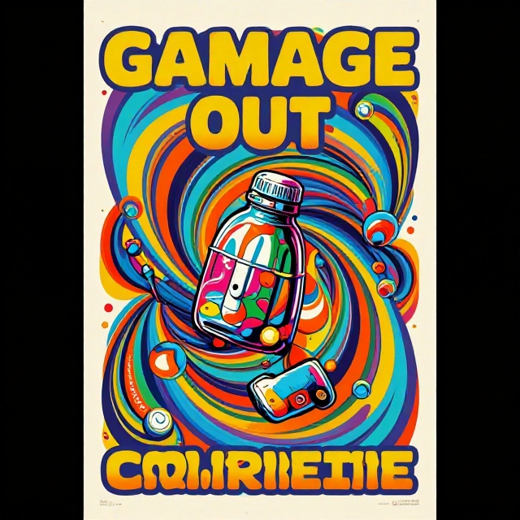
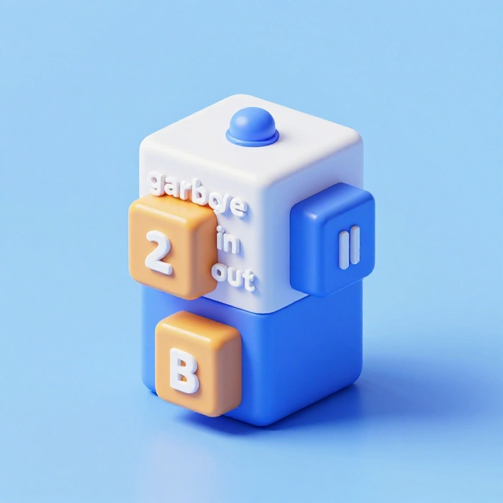
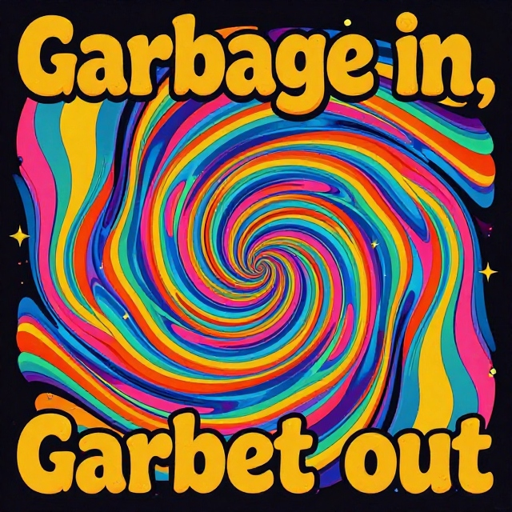

## Only works on my computer no matter what
absolute_path <- "Users/Natalie/repos/d2mr/example-repo/images/barplot.jpg"
# Works on your machine if you clone it to this location on your computer
mixed_path <- "~/repos/d2mr/example-repo/images/barplot.jpg"
# Works when you clone the repo anywhere
relative_path <- "/images/barplot.jpg"Preventing & Solving Problems
best practices, debugging, independent learning
2026-01-06
Meaningful Naming
“There are only two hard things in Computer Science: cache invalidation and naming things.” — Phil Karlton
Names should describe the named thing!
Not as easy as it sounds.
- Avoid disinformation
- Use pronounceable names
- Use searchable names
- Pick one word/format per concept
- Avoid encodings

Function Lifecycles
R is constantly evolving! CRAN uses 4 lifecycle stages for functions:
| Stage | Description |
|---|---|
|
|
|
|
|
|
|
|
|
|
|
|
Garbage in garbage out
- The quality of output of any system is determined by the quality of the input.
- Immaculate code can’t make up for horrendous data.
- Neither code nor data can fix terrible human decisions.




Take out your trash


Your data are bad because they are:
- Incorrect.
- Incorrectly obtained or recorded.
- Too different from other data.
- Too similar to other data.
- Missing.
- Not applicable to the your situation.
Your decisions are bad because you have:
- Misunderstood causality.
- Incomplete, missing, or inaccurate documentation.
- Incorrect hypotheses.
- Inadequate research design.
- Miscommunication.
- Erroneous judgments and reliance on human intuition.
Git(Hub) cardinal rules
Your workflow:
Commit little & commit lots

- Pull before you start editing
- Commit often as your work
- Push when you close your session
Thou shalt:
- Use frequent, informative commit messages
- Use a .gitignore to specify files and filetypes to keep local
- Maintain a README.md file documenting your repo’s structure and purpose
- Be intentional managing public and protected files
Remember the whole point of GitHub is version control!
Each assignment has a unique repo. Each repo is a unique files.
Never create multiple copies of the same files!!!
Quarto & R Notebooks
Use comments liberally…
- in the “narrative” of the manuscript using html comment notation:
<!-- This is a comment that readr and quarto will ignore --> - in R code chunks just like in R scripts:
# This will be ignored by R when it runs the chunks while knitting
Chunks should…
- do 1 and only 1 thing
- have informative & unique names
- specify how to run and display when knit
- be placed where used
- be short

Do not use the visual editor!!


Artwork by @allison_horst
Errors, Warnings, Messages
Errors must be addressed
R says: “Something has gone wrong and I cannot and will not move forward.”
Warnings should usually be addressed
R says: “This doesn’t look right but I’m just a robot what do I know.”
Messages are informational only
R says: “No problem, done! But just FYI…”
Not all alarming words and big red Xs are problems.

subjects doesn’t exist. The object’s name is subject.
"NA" doesn’t look like a numeral, but that’s ok because it’s not supposed to become a numeral.
filter() and lag() were already defined when the stats package was loaded so loading dplyr now overrides them. If we want the stats versions of these, we need to load that package after dplyr.Rubber duck debugging

Step 1:
Beg, borrow, steal, buy, fabricate or otherwise obtain a rubber duck* (bathtub variety).
Step 2:
Place rubber duck on desk and inform it you are just going to go over some code with it, if that’s all right.
Step 3:
Explain to the duck what your code is supposed to do, consider that the duck may need some specifics, and then go into detail and explain your code line by line.
Step 4:
At some point you will tell the duck what you are doing next and then realize that is not in fact what you are actually doing.
Step 5:
Enjoy as the duck sit there serenely, happy in the knowledge that it has helped you on your way.

In a pinch a colleague or trusted human might be able to substitute for the duck, however, it is often preferred to confide mistakes to the duck instead of the human.
I think the problem, to be quite honest with you, is that you’ve never actually known what the question is.
Douglas Adams